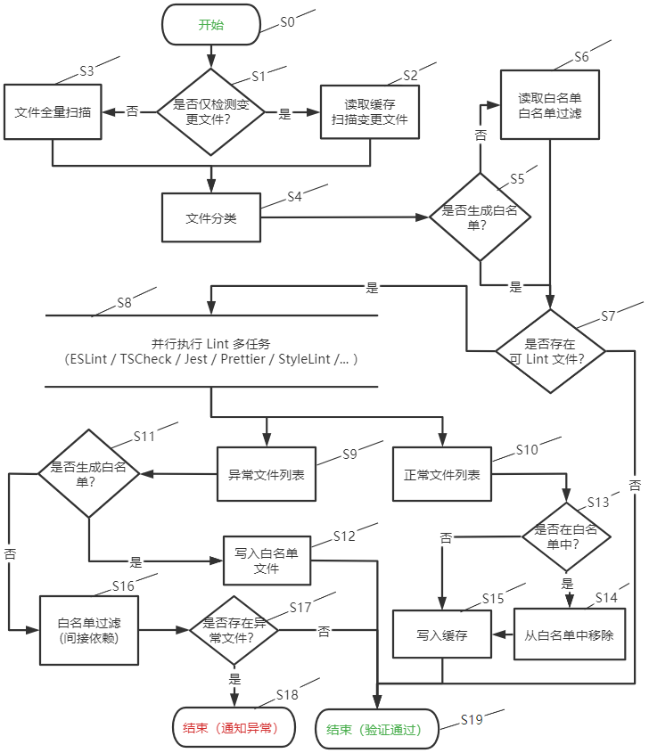

@lzwme/fed-lint-helper

@lzwme/fed-lint-helper


一个前端项目编码质量静态检查（Lint）辅助工具。用于辅助长期研发的大型前端项目渐进式的升级、迁移或改进编码规范约束规则。
功能特性(Features)
- 白名单机制。升级新版本、引入新规则时开启白名单模式，技术栈更新改造影响成本低
- 可选的多线程、多进程执行模式。多项静态检查并行执行效率更高
- 支持缓存能力。开启缓存二次执行效率显著提升，避免重复执行浪费时间
已支持的 Lint 能力：
eslint自定义 ESLint 检测执行tscheck自定义 TypeScript 检测执行jest自定义 jest 单元测试的执行prettier自定义 prettier 编码风格检测与格式化commitlint自定义遵循 Angular commit style 的 git 提交规范（用于 git hooks）jira自定义关联 jira 的检测逻辑（TODO: 方案说明）- more...

方案流程图
安装(Install)
# use pnpm
pnpm add -D @lzwme/fed-lint-helper
# use yarn
yarn add -D @lzwme/fed-lint-helper
# use npm
npm i -D @lzwme/fed-lint-helper
使用(Useage)
命令行方式(Command Line Interface)
flh --help
# 在当前目录下生成默认的配置文件 .flh.config.js
flh init --config
# typescript check
flh --tscheck
# eslint check
flh --eslint
# jest check
flh --jest
# git commit lint
flh --commitlint
# prettier fix
flh --prettier --fix
# Multitask parallel execution
flh --tscheck --eslint --jest
其他辅助工具命令(Others)：
# 目录删除
flh rm --help
# 示例：删除目录 a 和 dist
flh rm ./a ./dist -f
# 消息通知
flh notify --help
# 示例：企业微信机器人消息通知
flh notify "任务执行失败！@all" --wx-work <web hook key1> <web hook key2>
结合 husky 与 git hooks 使用
推荐结合 husky 配置本地 git hooks。参考示例：
# .husky/commit-msg
npm exec flh --commitlint
# .husky/pre-commit
npm exec flh -- --eslint --tscheck --jest --only-staged
npm exec flh -- --prettier --only-staged --fix
# git add --update
在 CI 持续集成过程中可视具体需求配置。
API 调用
提供了 TsCheck、ESLintCheck 等类对象供 API 方式调用，以便自定义处理逻辑在 CI 构建中的集成。
import { TsCheck, ESLintCheck } from '@lzwme/fed-lint-helper';
// typescript check
const tsCheck = new TsCheck({
exitOnError: false,
src: ['src'],
// checkOnInit: false,
// debug: true,
// toWhiteList: true,
// cache: true,
// removeCache: false,
// tsConfigFileName: 'tsconfig.eslint.json',
// silent: false,
});
const res = await tsCheck.start();
console.log(res);
// eslint check
const eslintCheck = new ESLintCheck({
exitOnError: false,
src: ['src'],
eslintOptions: {
overrideConfig: {
rules: { eqeqeq: 'warn' },
// rulePaths: ['./eslint-rules/'],
// errorOnUnmatchedPattern: true,
},
},
// checkOnInit: false,
// cache: argv.includes('cache'),
// removeCache: argv.includes('nocache'),
// silent: argv.includes('silent'),
// debug: argv.includes('debug'),
// toWhiteList: true,
// fix: argv.includes('fix'),
});
let res = await eslintCheck.start();
console.log(res);
res = await eslintCheck.start(['test/test/test-cases/ts-check-test-1.ts', 'src/ts-check.ts']);
console.log(res);
更多细节可参考 API 文档。
API 文档
开发(Development)
本地二次开发：
git clone https://github.com/lzwme/fed-lint-helper
pnpm install
pnpm dev
# npm link
或者 fork 本项目进行代码贡献。
欢迎贡献想法与代码。
License
@lzwme/fed-lint-helper is released under the MIT license.
该插件由志文工作室开发和维护。